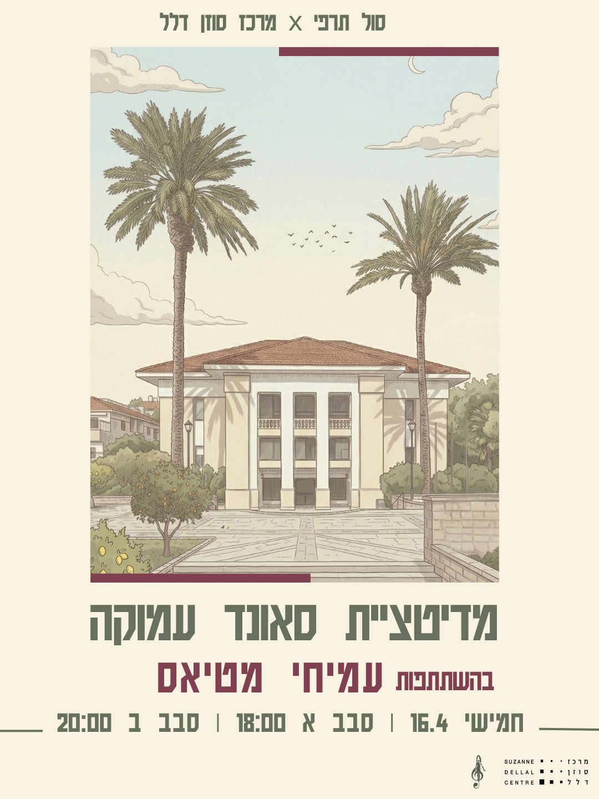

Upcoming Event
סול תרפי x סוזן דלל
מדיטציית סאונד עמוקה עם עמיחי מטיאס

בשבועות האחרונים אנו נמצאים במערבולת של חוסר ודאות וסטרס מצטבר. אלו בדיוק הרגעים שבהם נכון ומיטיב להציב עוגן המאפשר לפרוק, לנשום ולהרגיע את המיינד ומערכת העצבים - ביום חמישי הקרוב במרכז סוזן דלל מדיטציית סאונד מבית סול תרפי - המציעה שעה של הרפיה עמוקה.
ריפוי באמצעות סאונד מלווה את האנושות מאז התקופה הפרהיסטורית, מטקסי התיפוף השבטיים באפריקה דרך קערות הסאונד הטיבטיות ועד ימינו, כל דור דחף ודייק בתורו את השימוש בסאונד על מנת לרפא את הגוף והנפש.
בסדרת הסדנאות סול תרפי אנו מזמינים את האנשים שנמצאים בחוד החנית המוזיקלית - דיג'ייז ויוצרים אלקטרוניים מובילים - אנשים שהקדישו את חייהם הבוגרים לנבירה אינסופית בארגזי תקליטים, אינספור שעות באולפנים בלמידה טכנית של סאונד למטרת חידוד התדר, ואז יישום של כל התהליך הזה על קהלים של אלפים במועדונים ופסטיבלים מסביב לעולם.
המוזיקה שהם יוצרים ואוצרים מתעלה בקלות מעל מחסומי שפה ותרבות ומצליחה להעביר קהלים גדולים מסעות מרתקים של שינוי תודעה, ובמקרים מסוימים מסע רוחני של ממש. בסדנא נזמין יוצרים מובילים למפגשים אינטימיים - מדיטציות סאונד בשכיבה, שבהם אנו מפקידים בידיהם את ההובלה לסשן עמוק ומסקרן.
על עמיחי מטיאס
עמיחי מטיאס הוא מהדיג'ייז הוותיקים והמוערכים בישראל. מעבר לעברו כרזידנט של מועדון הבלוק ושורה של מועדונים מובילים, עמיחי הקדיש את חייו הבוגרים לאיסוף והתמחות במוזיקה אלקטרונית, בדגש על האוס לצד מגוון ז'אנרים נוספים. הפעם, הוא יתרגם אלפי שעות של נגינה מול קהל ואהבה טהורה למוזיקה, לכדי סשן מדיטטיבי, אינטנסיבי ועמוק.
מה הולך לקרות?
עמיחי יתארח לסשן מוזיקלי-מדיטטיבי ארוך, הזדמנות נדירה להחשף לזרמים התת-קרקעיים המניעים את יצירותיו ולצלול לעומק צלילים ותדרים מרפאים. במפגש נקיים מדיטציה חצי מודרכת בשכיבה במשך 50 דקות. אנו מדייקים את הסטנדינג בחלל עם סאונד מוקפד.
FAQ